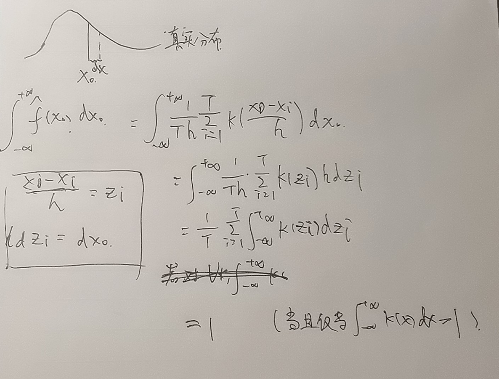

什么样的核函数可以用于非参数估计?
2022 在计量2课上想的问题
原理
想用非参数方法估计一个连续型随机变量的 pdf, 目前有样本 \(x_1,\ldots, x_n\).
从连续型随机变量的pdf定义出发, 是概率分布函数的导数, \(\lim_{h\to 0}\frac{F(x+h)-F(x-h)}{2h}\) ,
于是我们用这个式子来估计pdf.
\[
PDF(x) = \frac{1}{2nh}\sum_{i=1}^n \mathbb{I}(\frac{x_i-x}{h}\leq 1)
\]
然后随便找点损失函数，用数值方法优化一下h，这样可以得到pdf的一个非参数估计
根据pdf的定义，h是应该趋于0的，那么上式中h该取0，但是由于样本数量有限，是抽样得来的，所以不能这样做。那么很自然的想到，在x的h邻域内的这些点也不应该有相同的权值，越靠近x对我估计的pdf的贡献应该越大，课程上这样引入了其他核函数。
上面使用的核函数就是简单的指示函数 \(\mathbb{I}(\frac{x_i-x}{h}\leq 1)\) 在\(x_i\)于\(x\)距离不超过\(h\)时为1，其他为0. 新的核函数要让\(x_i\)于\(x\)距离不超过\(h\)时越靠近\(x\)权值越高，远离x权值就低。
问题
现在产生了两个问题： 1.
核函数是分段函数，把上面估计pdf的式子中的指示函数换成其他分段的核函数也会让产生的pdf有很多不可导的点，能否直接\(x_i\)于\(x\)距离不超过\(h\)这个限制，通过核函数直接加权。比如核函数为标准正态分布pdf，核函数不分段，最后生成的一定是一个处处可导的pdf。
2. 什么样的核函数可用?
来看第二个问题，见到了两个核函数，标准正态分布pdf和
\[
k(x)= \begin{cases}
\frac{3}{4}(1-x^2),\quad &x\leq 1 \\
0,\quad & \text{otherwise}
\end{cases}
\]
他们的特点是在\(\mathbb{R}\)上的积分都是1.
如果用 \(k'(x)=100*k(x)\)
拟合出的pdf基本上是真实pdf的100倍
同学(易大师)给出了一个简单证明:

kf proof
但是如果从原理部分理解过来，并不能得知为什么这样的核函数能用。选取的核函数应该要和指示函数等价，也就是说对于一个\(x\)，样本落在\(x\)的\(h\)邻域的比例要和这些样本的核函数的和相等。不过由于我们正在估计这个随机变量的pdf，样本的分布是不知道的，我觉得无法推出这个条件。
Lecture
Notes on Nonparametrics 找到了一个lecture
notes，里面详细介绍了核函数相关内容，section 2.2中提到2阶核函数都是从
\[
k_s(u)=\frac{(2s+1)!!}{2^{s+1}s!}(1-u^2)^s\mathbb{I}(|u|\leq1)
\]
得到的。
…?
想一想该如何解释为什么核函数可以这么取:
固定一个\(y\)，按照待估计连续型随机变量的分布再生成\(n\)个样本，这n个样本的核函数值的和应该恰好等于落在y的h邻域内的样本的数量。（为了方便，直接取h=1，并且假设n个样本都位于y的h邻域内）
\[
\begin{aligned}
&\sum_{i=1}^n \int_{-1}^1 P(x_i\in[a+y,a+da+y])k(a) \\
=& \sum_{i=1}^n \int_{-1}^1f(y+a)k(a)\\
=& \sum_{i=1}^n \int_{-1}^1(\frac{1}{m}\sum_{j=1}^m
k(x_j-y-a))k(a)\\
\end{aligned}
\]
算到这里我就不会算了，我觉得没什么办法能处理\(x_j\)，应该是不会等于\(n\)的。
观察这个式子，固定y不行，对所有y再积分也不行，y取所有样本也不行，感觉无法解释。
但是如果假设再生成的样本是均匀分布，那么一个样本的核函数值的期望就是\(\int_0^1 k(x) dx\)
这就是核函数的积分，结果是1。n个样本的核函数值的和的期望就是n
至于为什么不假设样本是服从和要估计的随机变量分布相同而是用均匀分布，我觉得只是因为好算，而且当h取得较小的时候区别不是很大。